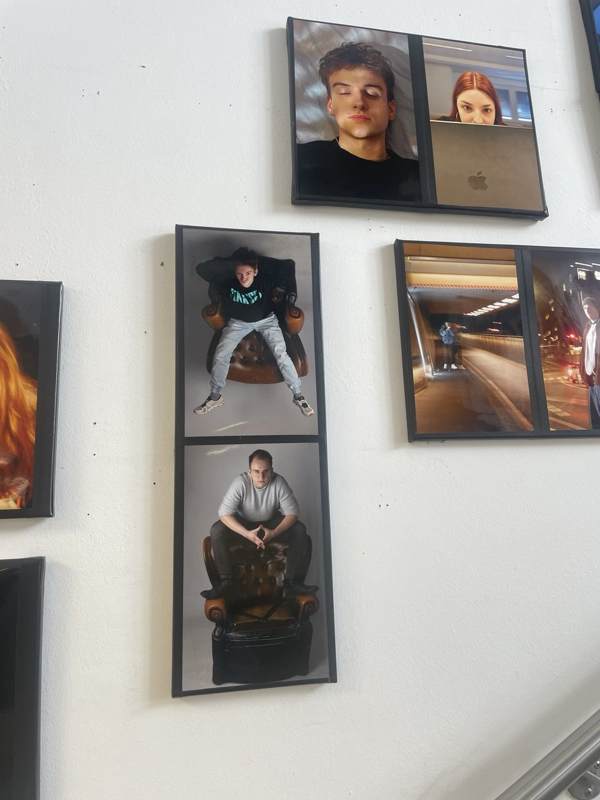

Same Field, New Things to Learn
Hi again! It's Oleg. In my last post I wrote about moving from programmatic advertising to the Content Strategy programme at FH Joanneum. A quick update since then: I've also started working as a freelance consultant on the side. So now I'm a student and a practitioner at the same time, which is a strange but useful combination.

You might think that after five years in agencies, a course called Monitoring and Web Analytics wouldn't teach me much. It's basically my day job. But I keep being surprised. One recent lecture started with this AI-generated slide of Pope Francis in a Moncler jacket - and somehow that opened into a really good discussion about tracking and attribution. The angle was just different from how we talked about it in the agency. New questions, new context, and suddenly things I thought I knew well looked fresh again.

The people here matter too. Every morning I walk past these portraits of my classmates on the way to the lecture room. Everyone comes from a different country and a different background, and you feel it in every discussion. Nobody sees content the same way.
That's probably the main thing I want to share in this post: it doesn't really matter how much experience you bring to COS. You'll still learn something new. I keep finding that out, week after week.